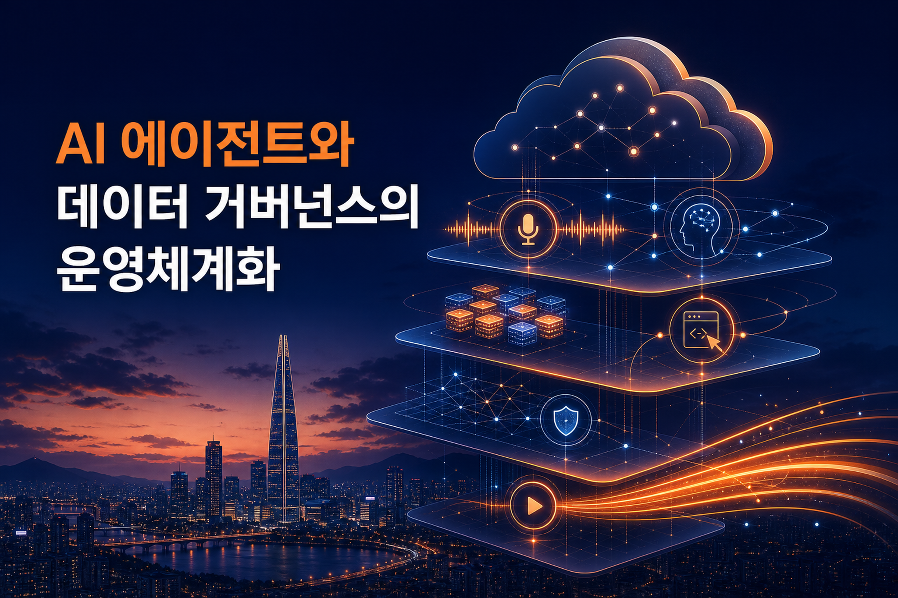
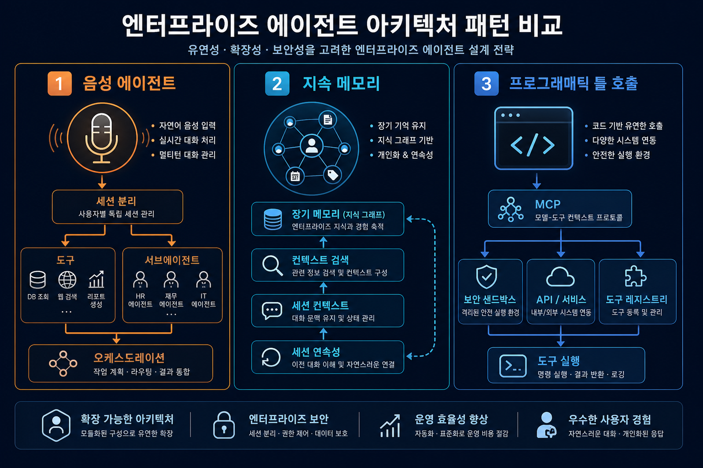
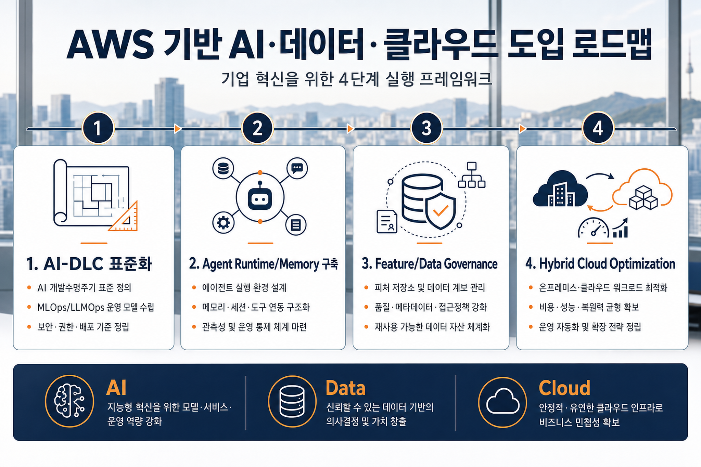

씨미가 4K · 4초 저지연 라이브를 만든 방법 — Amazon IVS와 자체 구축의 하이브리드 설계
씨미(CIME)가 Amazon IVS의 매니지드 1080p 트랙과 자체 구축 4K HLS 데이터 플레인을 결합해 2160p/60fps/최대 35Mbps/4초 이내 저지연 라이브를 구현한 고객 사례다. 핵심은 표준 영역은 IVS에 위임하고, 차별화 영역인 4K 송출·시청·캐시 최적화는 직접 설계한 하이브리드 경계 설정이다.
원문 보기오늘 수집된 AWS 블로그 6건은 생성형 AI가 “실험적 도구”에서 “운영 가능한 엔터프라이즈 플랫폼”으로 이동하고 있음을 보여준다. 핵심 키워드는 AI-DLC, AgentCore Runtime/Memory, Programmatic Tool Calling, Feature Store Governance, 그리고 고성능 하이브리드 클라우드 아키텍처다.

CJ올리브영 사례는 AI 코딩 도구의 개인 활용을 넘어 요구사항·설계·구현·검증을 팀 단위로 표준화하는 방향을 제시한다.
Nova Sonic, AgentCore Memory, PTC는 에이전트를 voice UX, persistent memory, managed gateway, sandbox execution으로 나누어 설계해야 함을 보여준다.
SageMaker Feature Store의 Lake Formation·Iceberg 통합은 ML 데이터 플랫폼의 권한·비용 통제를 자동화하는 흐름이다.
CIME의 4K 저지연 사례는 매니지드 서비스와 자체 구축을 대립시키지 않고, 차별화 품질 기준에 따라 경계를 설정한다.

에이전트 아키텍처는 이제 모델 호출보다 runtime, memory, tool, sandbox, session boundary 설계가 핵심이다.
| 변화 | 전략적 의미 | 기업 적용 관점 |
|---|---|---|
| AI 개발 운영체계화 | CJ올리브영 AI-DLC와 Kiro 사례는 생성형 AI를 개인 생산성 도구가 아니라 요구사항·설계·구현·검증을 연결하는 조직 운영체계로 다뤄야 함을 보여준다. | AI-DLC 표준 템플릿, Steering 문서, 품질 게이트를 먼저 정의한다. |
| Agent Runtime·Memory·Tooling 분화 | Nova Sonic, AgentCore Memory, PTC 글은 에이전트가 voice, memory, tool execution, sandbox로 세분화되고 있음을 보여준다. | Agent 플랫폼은 runtime, memory, tool gateway, code interpreter, telemetry를 별도 통제면으로 설계한다. |
| Data/Feature Governance 내재화 | SageMaker Feature Store의 Lake Formation/Iceberg 기능은 ML feature 운영에서 접근제어와 비용정책이 생성 시점에 내장되는 방향을 나타낸다. | Feature group 생성 표준에 권한·metadata lifecycle·감사 기준을 포함한다. |
| Hybrid Cloud Optimization | CIME 사례는 매니지드와 자체 구축의 경계가 비용절감이 아니라 차별화 품질과 운영 부담의 균형으로 결정되어야 함을 보여준다. | 공통 기능은 managed, 차별화 데이터 플레인은 자체 설계하는 이중 운영 모델을 채택한다. |
AI-DLC와 대화형 검색/RAG는 상품 탐색, 리뷰 요약, 파트너 검수, 보상 자동화까지 옴니채널 운영을 재설계할 수 있다.
AgentCore Memory와 Feature Store governance는 세션 격리, 감사, 개인정보 최소화, Lake Formation 기반 접근통제와 직접 연결된다.
Amazon IVS와 CloudFront 기반 하이브리드 설계는 글로벌 확장과 고품질 시청 경험을 동시에 요구하는 서비스에 유효하다.

실행 로드맵은 AI-DLC 표준화 → Agent Runtime/Memory → Feature/Data Governance → Hybrid Cloud Optimization 순서로 설계할 수 있다.
프로젝트 유형별 요구사항·설계·테스트 템플릿과 승인 게이트를 만들고, Kiro Steering/Custom Agent 같은 역할별 컨텍스트를 표준화한다.
AgentCore Runtime, Gateway, Memory, Code Interpreter/Sandbox, telemetry를 포함한 기준 아키텍처와 보안 boundary를 정의한다.
Feature Store, Lake Formation, Iceberg lifecycle 정책을 feature group 생성 파이프라인에 포함해 권한과 비용을 자동 통제한다.
Amazon IVS처럼 표준 기능은 managed에 맡기고, 저지연/초고화질/차별화 UX는 자체 데이터 플레인으로 설계하는 기준표를 만든다.
씨미(CIME)가 Amazon IVS의 매니지드 1080p 트랙과 자체 구축 4K HLS 데이터 플레인을 결합해 2160p/60fps/최대 35Mbps/4초 이내 저지연 라이브를 구현한 고객 사례다. 핵심은 표준 영역은 IVS에 위임하고, 차별화 영역인 4K 송출·시청·캐시 최적화는 직접 설계한 하이브리드 경계 설정이다.
원문 보기CJ올리브영이 AWS AI-DLC(AI-Driven Development Life Cycle)와 Kiro를 활용해 개인의 “바이브 코딩”을 조직 단위 AI 협업 프로세스로 전환한 실전 사례다. 3일 워크숍에서 대화형 커머스 검색, 멀티모달 채널 검수, 물류 시뮬레이션, 장애/보상 자동화, 엔터프라이즈 현대화 PoC를 구조화된 요구사항·설계·구현·검증 흐름으로 실행했다.
원문 보기Amazon Nova Sonic, Amazon Bedrock AgentCore, Strands BidiAgent를 활용해 저지연 음성 에이전트를 설계하는 세 가지 패턴(직접 tool, sub-agent/agent-as-tool, session segmentation)을 비교한다. 음성 에이전트는 자연스러운 응답성과 복잡한 업무 수행 사이의 latency trade-off가 핵심 설계 변수다.
원문 보기Kiro CLI에 Amazon Bedrock AgentCore Memory를 연결하는 MCP 서버를 구현해 세션을 넘어 대화 기록, 선호, 프로젝트 맥락을 유지하는 방법을 설명한다. Agentic IDE/CLI가 매 세션 맥락을 잊어버리는 생산성 손실을 해결하는 패턴이다.
원문 보기Amazon SageMaker Feature Store가 SageMaker Python SDK v3.8.0에서 Lake Formation 네이티브 통합, Apache Iceberg metadata/snapshot lifecycle 제어, SDK v3 Feature Store 지원을 제공한다는 발표다. 민감 feature 데이터 거버넌스와 Iceberg metadata 비용 폭증 문제를 동시에 겨냥한다.
원문 보기Programmatic Tool Calling(PTC)을 Amazon Bedrock에서 구현하는 세 가지 방식(자체 ECS/Docker sandbox, AgentCore Code Interpreter 관리형 방식, Anthropic SDK 호환 proxy)을 설명한다. PTC는 모델이 여러 도구 호출을 순차적으로 반복하는 대신 코드를 생성하고 sandbox가 병렬 호출·필터링·집계를 수행하게 해 지연과 토큰 비용을 줄인다.
원문 보기Image Prompt 1 목적: 히어로 이미지 — 오늘 AWS 블로그 전략 트렌드 요약 삽입 위치: HTML hero 아래 image2 prompt: Executive Korean tech blog hero illustration, enterprise AI and cloud strategy in 2026, abstract AWS-inspired cloud layers without logos, voice agents, agent memory, programmatic tool calling, ML feature governance, and low-latency media streaming represented as elegant connected nodes over Seoul skyline, premium editorial style, deep navy and electric orange accents, no brand logos, minimal readable Korean title text only: "AI 에이전트와 데이터 거버넌스의 운영체계화", high contrast, clean composition. 권장 비율: 16:9 alt 텍스트: 엔터프라이즈 AI와 클라우드 전략을 표현한 추상 히어로 이미지 Image Prompt 2 목적: 인포그래픽 — AgentCore/Nova/Kiro/PTC 패턴 삽입 위치: 핵심 트렌드 분석 섹션 image2 prompt: Korean executive infographic, three-column visual comparing enterprise agent architecture patterns: "Voice Agent", "Persistent Memory", "Programmatic Tool Calling". Use clean icons for microphone, memory graph, code sandbox; arrows show tools, sub-agents, session segmentation, MCP, secure sandbox. Modern cloud architecture editorial illustration, dark navy background, orange and cyan highlights, no AWS logo, Korean labels should be visually legible but concise. 권장 비율: 16:9 alt 텍스트: 음성 에이전트, 지속 메모리, 프로그래매틱 툴콜링 아키텍처 비교 인포그래픽 Image Prompt 3 목적: 인포그래픽 — 한국 기업 실행 로드맵 삽입 위치: 실행 전략 섹션 image2 prompt: Korean enterprise roadmap infographic for adopting AWS AI, Data, and Cloud capabilities. Four stages: "1. AI-DLC 표준화", "2. Agent Runtime/Memory 구축", "3. Feature/Data Governance", "4. Hybrid Cloud Optimization". Premium consulting-style diagram, readable Korean, card-based timeline, subtle Seoul office background, no corporate logos, Noto Sans KR-like typography, navy/white/orange palette. 권장 비율: 16:9 alt 텍스트: 한국 기업의 AI 데이터 클라우드 실행 로드맵 인포그래픽